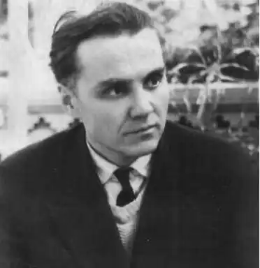
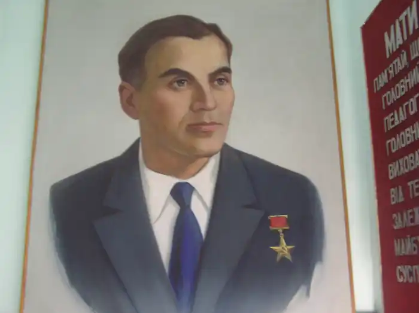
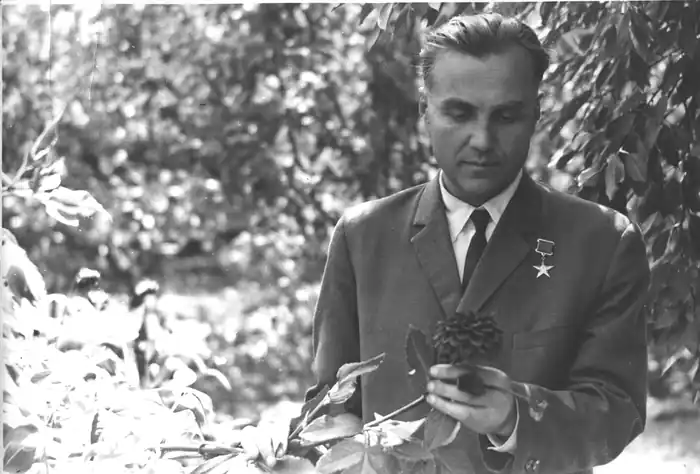

Сухомлинський Василь Олександрович
(1918-1970)
педагог, публіцист, письменник Закінчив Полтавський педагогічний інститут (1939). 1935 р. розпочав педагогічну діяльність. Працював учителем у Василівській школі Онуфріївського району, учителем і завучем в Онуфріївській середній школі. Багаторічний (1947—1970) директор Павлиської середньої школи. Кандидат педагогічних наук (з 1955), автор багатьох книг, брошур і статей, художніх творів для дітей. Розробляв питання теорії і методики виховання у шкільному колективі та родині, всебічного розвитку особистості учнів, педагогічної майстерності. Особливу увагу приділяв патріотичному вихованню дітей і молоді, проблемам розумового, морального, естетичного та трудового виховання школярів. Книга В.О.Сухомлинського "Серце віддаю дітям" (1969) удостоєна Державної премії УРСР 1974 р. Народився Василь Олександрович Сухомлинський 28 вересня 1918 р. в селі Василівка Онуфріївського району Кіровоградської області (за тогочасним адміністративно-територіальним поділом — Василівська волость Олександрійського повіту Херсонської губернії) у незаможній селянській родині. Батько його, Олександр Омелянович, працював по найму як тесляр і столяр у поміщицьких економіях та заможних селянських господарствах. Після встановлення радянської адміністрації в Україні був активістом колгоспного життя у селі, брав участь у керівництві кооперацією та місцевим колгоспом, виступав у пресі як сількор, завідував колгоспною хатою-лабораторією, керував трудовим навчанням учнів (з деревообробної справи) у семирічній школі. Мати майбутнього славетного педагога, Оксана Юдівна, працювала в колгоспі. Разом з Олександром Омеляновичем вона виховала, крім Василя, ще трьох дітей — Івана, Сергія та Меланію. Всі вони стали вчителями. Василь Сухомлинський навчався спочатку (1926—1933) у Василівській семирічці, де був одним із кращих учнів. Влітку 1934 р. він вступив на підготовчі курси при Кременчуцькому педінституті і того ж року став студентом факультету мови та літератури цього вузу. Проте через хворобу 1935 р. змушений був перервати навчання в інституті. Сімнадцятирічним юнаком розпочав Василь свою практичну педагогічну роботу. У 1935—1938 рр. він викладав українську мову і літературу у Василівській та Зибківській семирічних школах Онуфріївського району. У 1936 р. Сухомлинський продовжив навчання на заочному відділі Полтавського педагогічного інституту, де спершу здобув кваліфікацію учителя української мови і літератури неповної середньої школи, а згодом — і викладача цих же предметів середньої школи (1938). Згадуючи цей час, Василь Олександрович писав: "Мені випало щастя два роки вчитися в Полтавському педагогічному інституті… Кажу — випало щастя, бо нас, двадцятирічних юнаків та дівчат, оточувала в інституті атмосфера творчої мислі, допитливості, жадоби знань. Я з гордістю називаю Полтавський педагогічний інститут своєю альма-матер…" З 1938 р. і до початку Великої Вітчизняної війни Василь Олександрович працював в Онуфріївській середній школі учителем української словесності, а через деякий час — і завідуючим навчальною частиною школи. Війна внесла свої корективи у розмірений ритм життя: у липні 1941 р. Василя Олександровича було призвано до війська. Закінчивши військово-політичні курси у Москві, одержав військове звання молодшого політрука, а з вересня 1941 р. він — політрук роти у діючій армії. 9 лютого 1942 р. в бою за село Клепініно під Ржевом дістав тяжке поранення і понад чотири місяці лікувався в евакогоспіталях. З червня 1942 р. до березня 1944 р. В.О.Сухомлинський працював директором середньої школи і вчителем російської мови і літератури у селищі Ува Удмуртської АРСР. Навесні 1944 р. Василь Олександрович разом з дружиною Г.І.Сухомлинською виїжджає на Україну, в щойно визволений Онуфріївський район Кіровоградської області. Упродовж чотирьох років він працював завідуючим районним відділом народної освіти і одночасно викладав у школі. Саме в цей період Василь Олександрович дебютує у пресі — онуфріївській районці "Ударна праця" та обласній газеті "Кіровоградська правда" — із статтями на педагогічні теми. Найперша його публікація — "Перед новим навчальним роком" — з’явилася 25 серпня 1945 р. в "Ударній праці". 1948 р. В.О.Сухомлинського призначають, на його прохання, директором Павлиської середньої школи. Цим навчальним закладом він керував до останку життя, двадцять три роки у Павлиші стали найпліднішим періодом його науково-практичної та літературно-публіцистичної діяльності. Василь Олександрович доклав чимало зусиль, аби піднести пересічну сільську школу на рівень найкращих у тодішньому СРСР загальноосвітніх навчальних закла-дів, щоб перетворити її на справжню лабораторію передової педагогічної думки і якнайповніше узагальнити набутий досвід. І він досяг поставленої мети, насамперед завдяки власній винятковій працьовитості, постійному творчому горінню, твердій, безкомпромісній вимогливості як до себе, так і до всього педагогічного колективу. Починаючи з 1949 р. Василь Олександрович виступає не тільки у місцевій періодиці, а й у республіканських та всесоюзних виданнях. У першій половині 50-х років його починають друкувати й педагогічні видання тодішнього "соціалістичного табору". 1955 р. він успішно захищає у Київському державному університеті кандидатську дисертацію на тему "Директор школи — керівник навчально-виховної роботи", а через рік з’являється його перша велика монографія "Виховання колективізму у школярів". Наприкінці п’ятдесятих років виходять друком одна за одною такі грунтовні праці В.О.Сухомлинського, як "Педагогічний колектив середньої школи" та "Виховання радянського патріотизму у школярів". Даниною тогочасній ідеології була книга педагога "Виховання комуністичного ставлення до праці" (1959). На найвищий щабель своєї педагогічної творчості Василь Олександрович піднявся у шістдесяті роки. Саме тоді з особливою виразністю і силою проявився його яскравий і самобутній талант педагога-дослідника й педагога-публіциста, саме у ті роки написав він найкращі книги, статті, художні твори для дітей та юнацтва. До найголовніших, найгрунтовніших творів В.О.Сухомлинського, опублікованих починаючи із 1960 р., належать: "Як ми виховали мужнє покоління" , "Духовний світ школяра" , "Праця і моральне виховання", "Моральний ідеал молодого покоління", "Сто порад учителеві", "Листи до сина", "Батьківська педагогіка", "Проблеми виховання всебічно розвиненої особистості" і особливо — "Павлиська середня школа" та "Серце віддаю дітям" (1969). Остання праця витримала вже кільканадцять видань, вона була удостоєна першої премії Педагогічного товариства УРСР (1973) і Державної премії УРСР (1974). На високу оцінку заслуговують і праці В.О.Сухомлинського, які з’явилися окремими виданнями вже після смерті талановитого педагога: "Народження громадянина", "Методика виховання колективу", "Розмова з молодим директором школи", "Як виховати справжню людину". Віддаючи багато енергії вчительській роботі, створюючи фундаментальні педагогічні твори, В.О.Сухомлинський водночас виступав і як активний громадський діяч, систематично проводив культурно-освітню роботу серед населення Павлиша, брав діяльну участь у численних науково-педагогічних конференціях, симпозіумах, сесіях, нарадах, семінарах. Не обійшло його й офіційне визнання: з 1957 р. В.О.Сухомлинський — член-кореспондент Академії педагогічних наук РРФСР, з 1958 р. — заслужений учитель УРСР. У 1968 р. йому присвоїли звання Героя соціалістичної праці. Того ж року він був обраний членом-кореспондентом АПН СРСР. 2 вересня 1970 р. серце Василя Олександровича Сухомлинського перестало битися. Втім, фізична смерть не поклала край життю його творчих надбань, не зупинила його жертовного служіння школі, учительству, вітчизняній педагогічній науці. "Людина, — любив повторювати педагог, — народжується на світ не для того, щоб зникнути безвісною пилинкою. Людина народжується, щоб лишити по собі слід вічний". Ці проникливі слова можна і треба віднести й до самого Василя Олександровича, адже саме вони були тим категоричним імперативом, якому завжди і всюди слідував він у своєму недовгому, але яскравому й напрочуд плідному житті Педагога. Все найцінніше, створене ним, назавжди увійшло до скарбниці вітчизняної педагогіки та національної духовної культури.